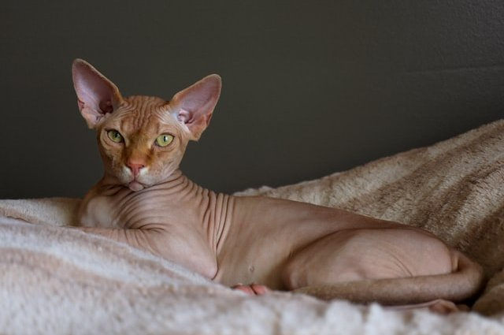

Характер
К кошкам породы сфинкс невозможно относиться равнодушно: их либо любят, либо не понимают. Но, несмотря ни на что, они — образец интеллекта, преданности и независимости. При этом кошка этой породы уважает и любит своего хозяина, стараясь всецело завладеть его вниманием.
Сфинксы очень умны и обучаемы. Считается, что эти кошки легко выучивают команды и понимают хозяина с полуслова. Но вместе с тем они обладают своим характером и не будут просто так, напоказ, выполнять команды из чьей-либо прихоти. Эти кошки добры и ласковы, им не свойственны страх и злость. Однако они требуют такого же отношения и к себе. На сфинкса нельзя кричать и повышать голос. Он не только не поймет, чего вы от него хотите, но может получить психологическую травму.
Сфинксы спокойно реагируют на других животных в семье. Благодаря тому что у них отсутствует чувство страха, эти кошки легко уживаются даже с крупными собаками. Еще одно отличительное качество сфинксов — манера общения с детьми. Кошки готовы играть, валяться, бегать с ребенком — одним словом, быть превосходной нянькой, которая никогда не поцарапает и не укусит: у сфинкса нет чувства агрессии. Психически нестабильные особи отбраковывались из разведения на протяжении всей полувековой истории породы.
Уход
Сфинксы очень чувствительны к низким температурам и сквознякам. Если температура в помещении ниже 20 градусов, рекомендуется одевать кошку в свитер или теплый костюм. Зимой можно также утеплить кошачий домик.
Отсутствие шерсти повлияло на потоотделение кошек. Сальные железы по всему телу животного выделяют пот, который, смешиваясь с пылью и грязью, может провоцировать развитие кожных заболеваний. Вследствие этого кошку рекомендуется регулярно купать: один раз в 7–10 дней со специальным шампунем. После этого питомца обязательно укутывают в теплое полотенце, чтобы он не замерз
Условия содержания
Сфинксы — абсолютно домашние кошки, которые не приспособлены для улицы, особенно для самостоятельных прогулок.
Одно из любимых занятий лысой кошки — погреться на подоконнике на солнышке или около батареи. Однако владельцу надо быть очень внимательным: эти кошки могут легко получить ожог, особенно пребывая на солнце.
Лучшая физическая активность сфинкса — игры, кошка будет рада множеству игрушек, лабиринтам и многоярусному домику с интересными конструкциями. Так питомец сможет занять себя в отсутствие домочадцев.
Сфинксы обладают хорошим аппетитом, поэтому кормить их надо качественными кормами, а также следить за количеством и калорийностью рациона.